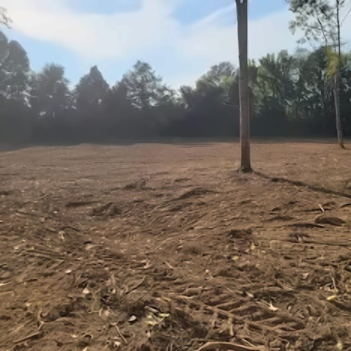
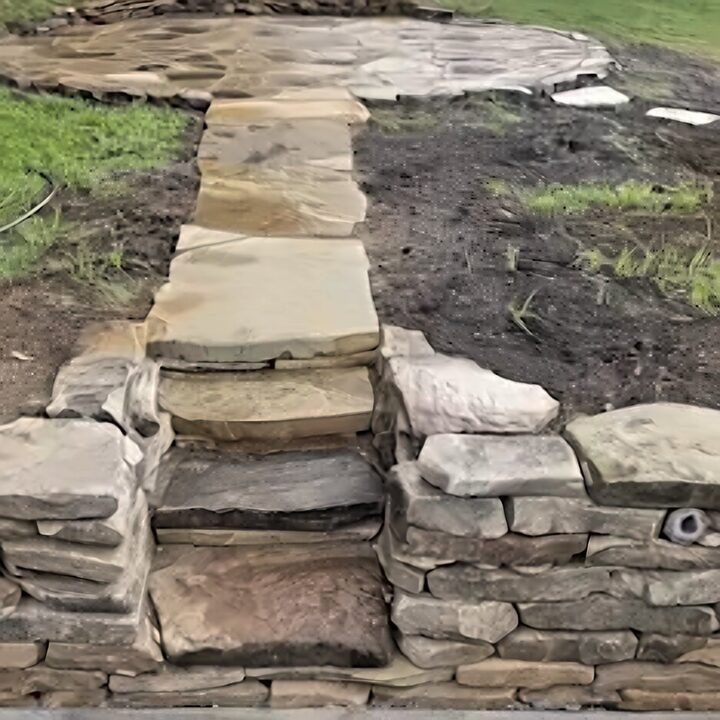
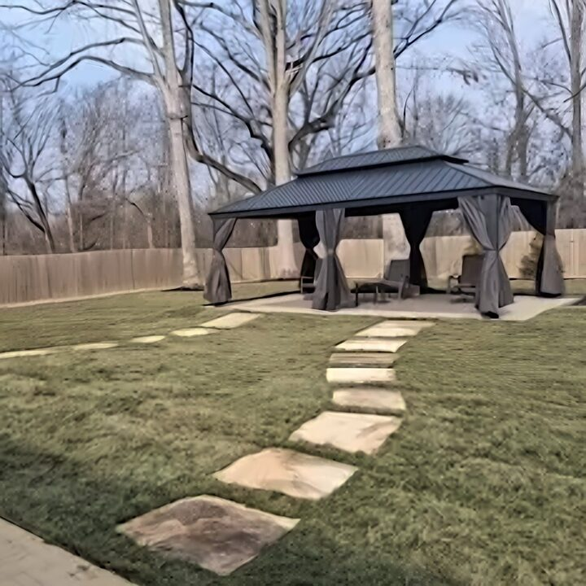
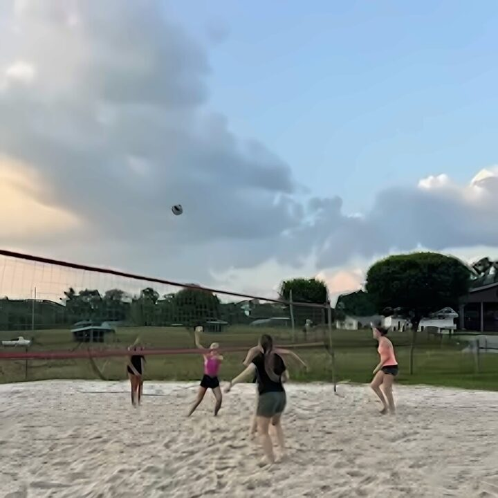
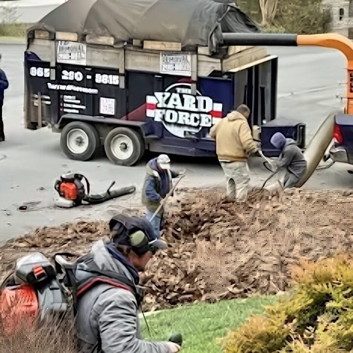
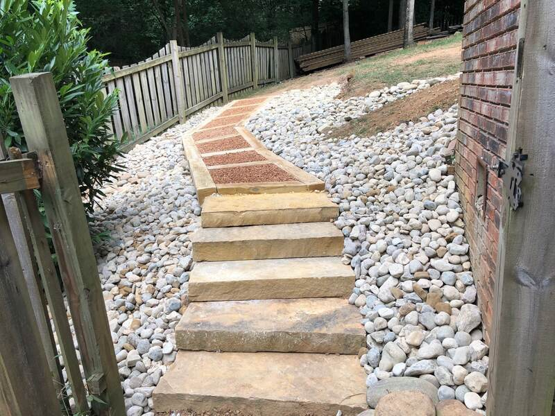
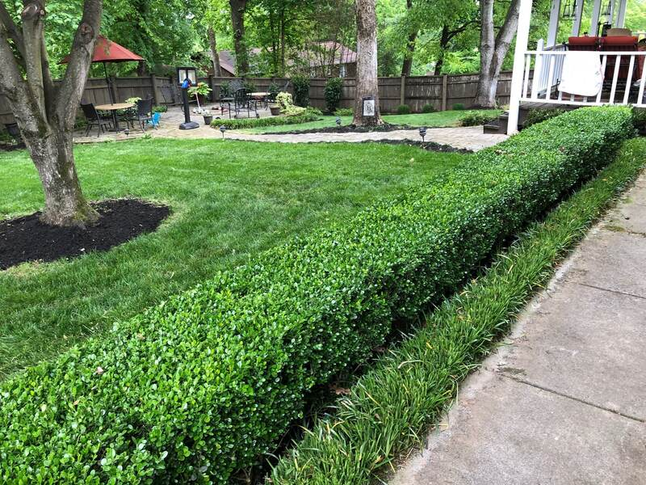
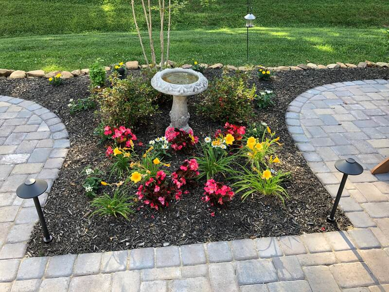
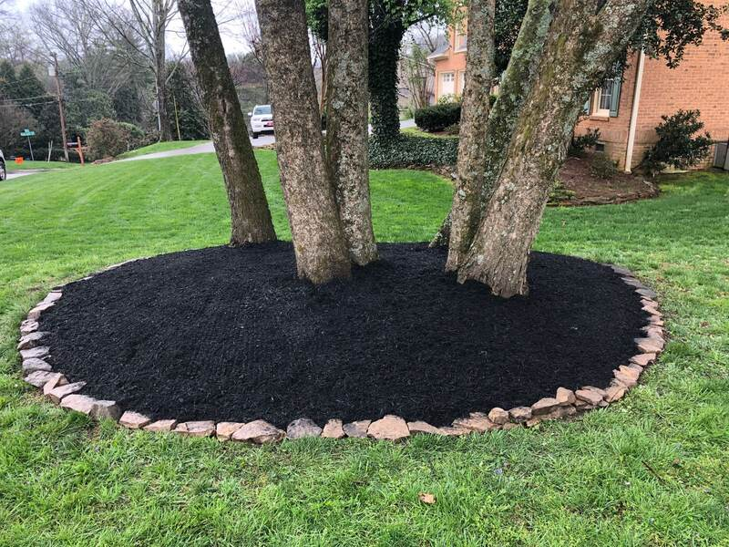

5-Star Feedback
Hear It From Our Clients
A Retaining Wall Nobody Else Could Reach
“They just did everything they said, really well and timely. … And your guys were fantastic.”
Tom · Sequoyah Hills, KnoxvilleA Lakefront Lot, Cleared
“If anybody wants to skip all that headache, I would just call these guys.”
Josh · Loudon, TNA New-Build Backyard Transformation
“The work crew were fabulous. … Budget and flexibility was huge. … We're very happy with the project.”
Caitlin · Bluegrass / Ebenezer, KnoxvilleOld Bricks, New Front Yard
“There was poison ivy everywhere … and now it's absolutely beautiful.”
Sean · Fourth & Gill, KnoxvilleIn Their Words
 ★★★★★
★★★★★Quick, Professional and Reasonably Priced
“If you're looking for land clearing The Yard Force has got you covered. Adam and his brother are the two I worked with to get my project down. They were extremely professional and accommodating. They got the job done quick and it was reasonably priced. Would highly recommend to anyone looking to Clear/mulch land.”
matt gutierrez ★★★★★
★★★★★Land We Thought Was Lost Forever
“Before, During, and After!! Omg! The hubby and I cannot believe the difference! We own a home on a 2 acre lot in the city limits of Knoxville. 1.45 is a detention pond meant to hold up to 10 days of storm water due to the water shed/storm water act. We are so thankful and grateful to The Yard Force for everything! First person (Clay) for helping us get quoted, scheduled, and staying within our budget and answering all of our questions. Second person (Kevin) for helping me understand the job, being patient with me, and literally doing an amazing job! We are so excited to be able to use portions of our land that we thought would be lost forever!”
Ashley Merie · June 2024
★★★★★A Couple of Acres, Cleared Three Days Later
“Adam and crew did an amazing job. They came out to look at the job on a Sunday and were there working 3 days later. Cleared a couple of acres for me with great communication and better finished product than we envisioned. Very prompt and professional crew. Would not hesitate to hire them again.”
Rick Jordan II
★★★★★Just as We Imagined It Could Be
“My wife and I could not be more pleased with the completed project. It is just as we imagined it could be. Andy and his crew took the time and made the effort to surpass our expectations and to reflect the Yard Force Company's high standards. Adam, one of the owners, took the time to ensure that we were pleased with the compleyed project. My wife and I are grateful. Thank you guys!”
Oliver Lang
★★★★★My Backyard Looks Amazing
“JB and his crew were awesome. My backyard looks amazing. We are so happy and completely satisfied with their work. Will definitely reach out to them again when we are ready to redo our front yard.”
Phillip Garrett ★★★★★
★★★★★A Whole Backyard Project in a Week
“JB came out to give us a line by line quote for our entire backyard project, which included: retaining walls, small paver patio, steps, grading & sod, etc. Our entire project was completed within a week even with a day of rain. Andy & his crew did an excellent job. Andy communicated with us during the entire process. The Yard Force really can handle all your yard needs.”
Cat G ★★★★★
★★★★★Land Cleared and a Barn Pad Built
“Couldn’t be happier. Adam was great. His communication was spot on. Price was great considering the work and travel. I’m a far distance away and he sent me videos and pics daily. He kept me in the loop on his timing and weather. They did an excellent job clearing land with some rather large trees. I asked to have stumps placed in one area and trunks in another and they did just that and very neatly too. They also built a pad for a barn to be built. They also widened the access road nicely. They tackled bad weather and still got it done and flat! Even the delivery driver commented on how solid the pad was. It was nothing short of a great experience. I would recommend them to anyone. Thank you very much.”
Joseph Carbray ★★★★★
★★★★★Above and Beyond
“I was very impressed with the job they did... They went above and beyond the call of duty.. they addressed all my needs and did it in a timely manner for the price they quoted.. they were friendly, hard-working and thorough with the job they did.. if anybody needs clearing their property.. well these folks do a great job and I recommend them highly..”
Kelly Brown
★★★★★A World-Class Volleyball Court
“The Yard Force rescued us! We needed experts to quickly renovate and repair our sand volleyball court with care and precision. We had three truckloads of sand and needed professional help. Clay and his team saved the day, and we have a world-class court now. They worked all day, stayed late, and made sure our project was completed.”
Seth Houser
★★★★★Always Relied On to Get the Job Done
“The Yard Force guys can always be relied on to get the job done, efficiently and with great competence! Wow! And, of course, great logo!”
Conrad H. Blickenstorfer
★★★★★A Retaining Wall With Stairs, Better Than Expected
“The Yard Force came to my home to build a retaining wall with stairs. Communication was regular and clear. The work was done on and within the dates that we were told it would be. I was invited out to discuss progress and preferences throughout the build. The wall was built very well and details were better than I had expected. Mark and Clay were the main guys on site each day and they clearly knew what they were doing. I would recommend them any day.”
Tess McHone ★★★★★
★★★★★Professional, Timely, Honest
“Can't say enough great things about Yard Force! Professional, timely, honest, cost-effective, and knowledgeable. I've used them for planting new grass in a large yard, and planting a large mature tree, along with other regular services.”
Scott Cruze · November 2023Estimate to Finished Product in Three Weeks
“Clay and crew were dependable from the moment the project started. We went from estimate to finished product in three weeks. They took our vision of the space and made it better than we could have imagined. Each and every person that was on the job site was beyond polite and respectful. We loved working with The Yard Force!”
Satisfied Client ★★★★★
★★★★★A Yard Brought Back to Life
“Clay and his crew did an amazing job in bringing our yard back to life after many years of neglect. Clay was thoughtful, creative, true to his word, and a pleasure to work with. His team was hard working and dedicated to doing a first-rate job. We highly recommend them for your landscaping projects!”
Satisfied Client
★★★★★Top Notch at a Very Reasonable Price
“Top notch company to work with. They were very prompt with my estimate and got my job scheduled in a timely manner that worked for my schedule. The crew was on time, kind, and did a fantastic job at a very reasonable price! I would highly recommend The Yard Force to anyone in the Greater Knoxville area that needs yard work done.”
Jordan Enix ★★★★★
★★★★★Leaf Removal, Mulch & Pine Straw for Two Years
“We have used the Yard Force for two years now. They are professional, hard working and pay attention to detail. We have used them for leaf removal, as well as mulch and pine straw installation. We have a TON of leaves in the fall and they come blow them out of the yard and haul them away. I have already recommended their services to many neighbors.”
Jenny Guza · January 2023
★★★★★A Back Yard We Now Enjoy
“Clay and his team were excellent. They did a great job and completely changed our back yard into a place we now enjoy. Highly recommend.”
Sharon Sullivan · January 2023 ★★★★★
★★★★★Topsoil Leveled and Fresh Sod
“Had the Yard Force come out and level with some topsoil and apply some sod. They did a fantastic job and will definitely use them in the future.”
Ryan Bucci · May 2023
★★★★★Great Work
“Great work 👏🏻”
Tiffany Poole · July 2023